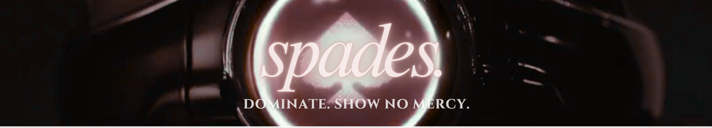


5 of Spades, also known as Game of Tag, is featured in Episode 2 of Alice in Borderland. In this game, players have to find a safe zone and diffuse the bombs in a certain room. They have to avoid the Tagger in the hallways of a seven story L-shaped apartment. Players are given time to choose their starting position, and the game begins 2 minutes later.
The game venue is the Toei Sendagaya Apartment Building, and the time limit is 20 minutes. To deactivate the bomb, there are two buttons on opposite ends of the safe zone which have to be pressed simultaneously.
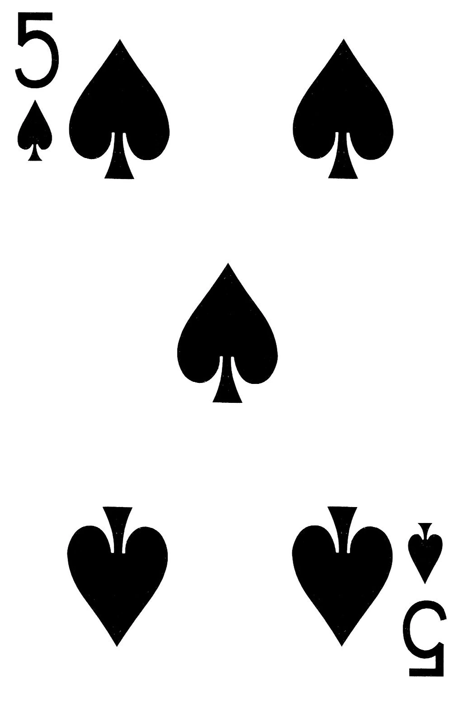
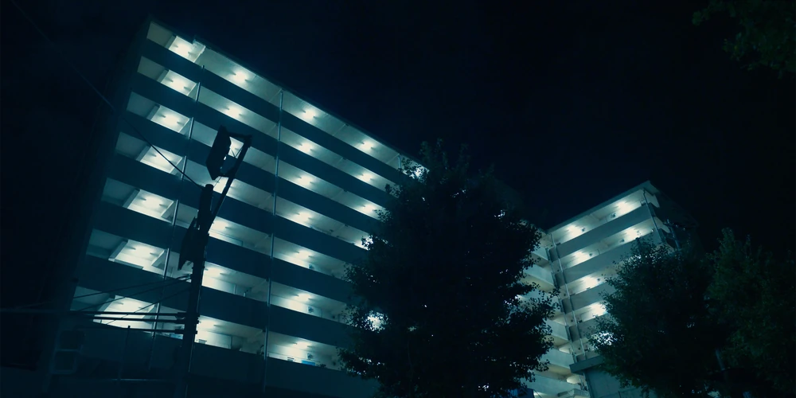
6 of Spades, also known as Beast Hunter, is featured in Episode 5 of Alice In Borderland. In this game, players have to defeat all animals within the arena. Each animal would give them a number of points. (Crows: 1 point, Eagles: 30 points, Wild Boars: 50 points, Panthers: 80 points, Tigers: 100 points)
The game venue is at an amusement park. The attractions inside such as the carousel or the rollercoaster can be activated during the game.
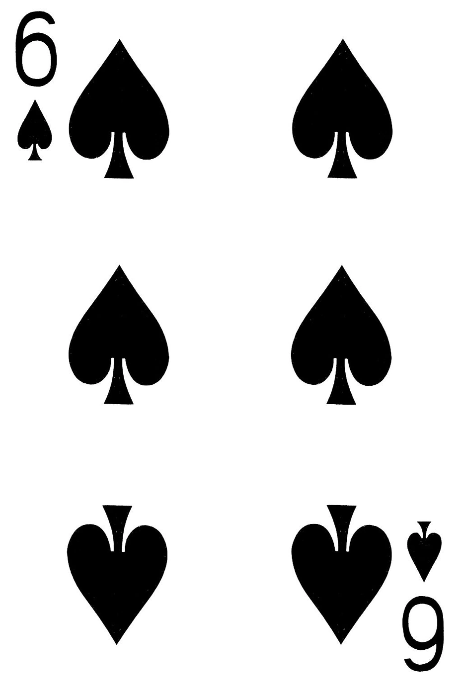
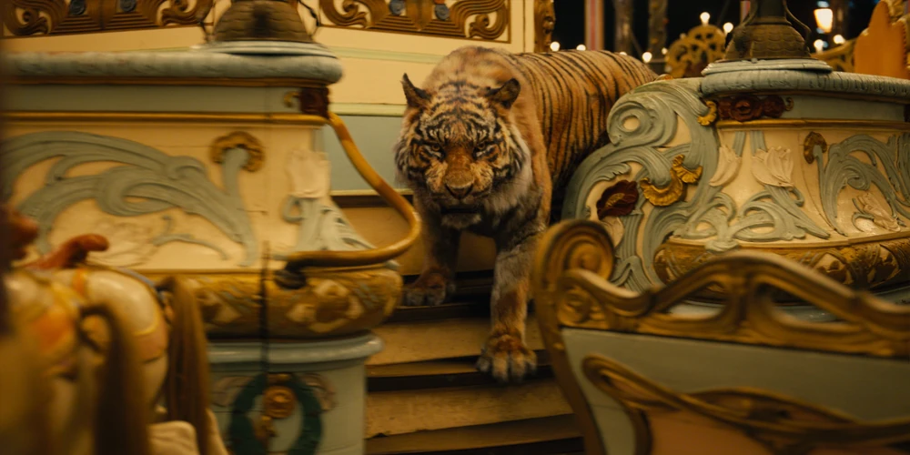
7 of Spades, also known as Boiling Death, is featured in Episode 5 of Alice in Borderland. In this game, players have to escape the stadium as underground geysers explode and flood the arena. This game is known to be Heiya's first game in the Borderlands.
The game venue is at a football stadium. Throughout the game, the arena is destroyed by the underground geysers which could be heated by contact with hot rocks or magma. After the game, hot springs were left in the venue. (Featured in S2, Episode 6)
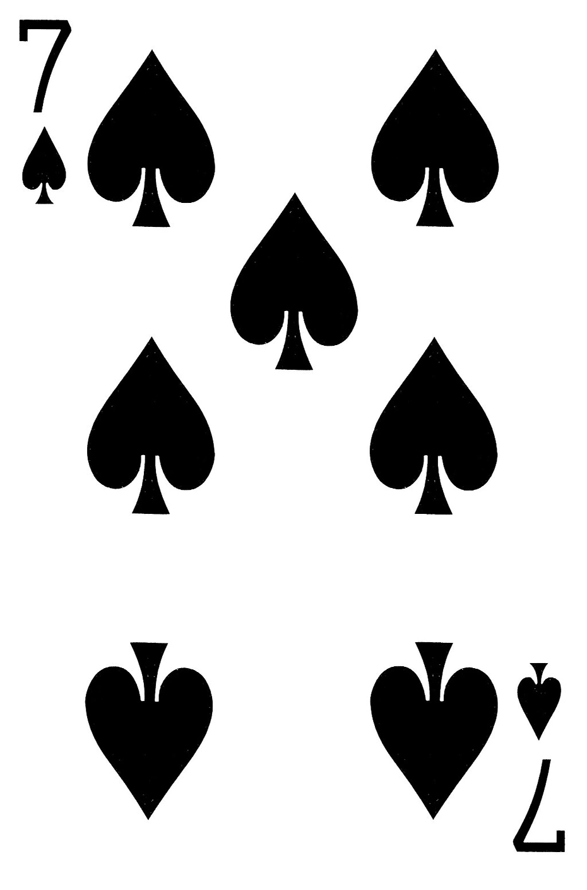
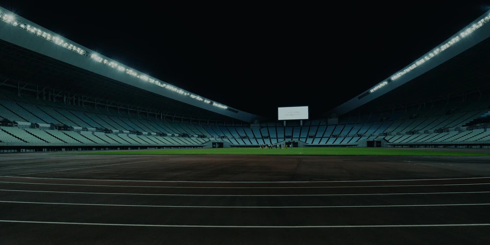
This game is featured throughout Season 2. In this game, players must survive against the King of Spades, who is heavily armed with sniper rifle, assault rifle, pistol, and knife. Players start empty-handed, but can scavenge around the area for weapons and other gear.
Unlike any other game, the King of Spades venue is the entire area of the Borderlands. If a player is not in the venue of any other face card game, they are automatically considered to be a participant in the Survival game.
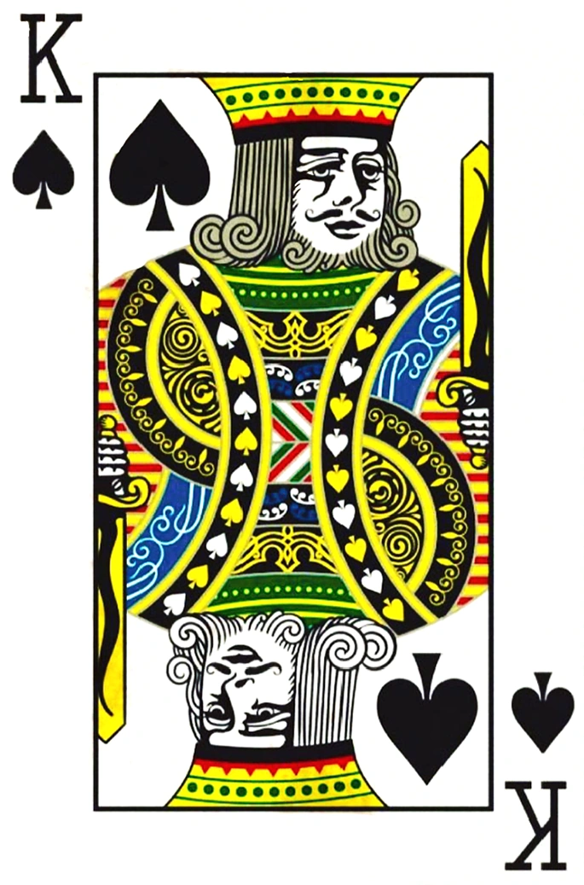
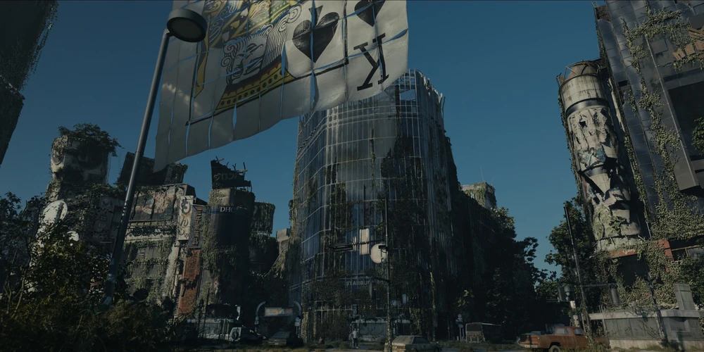
Click on any character to reveal their fate.


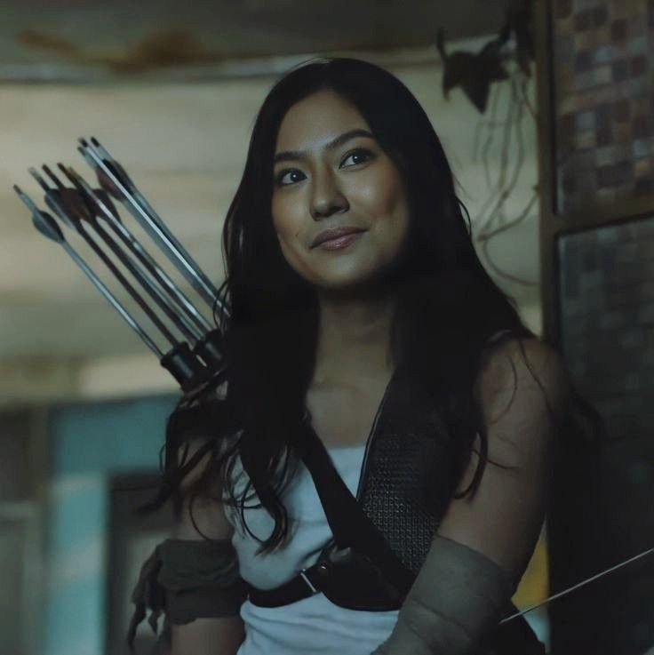


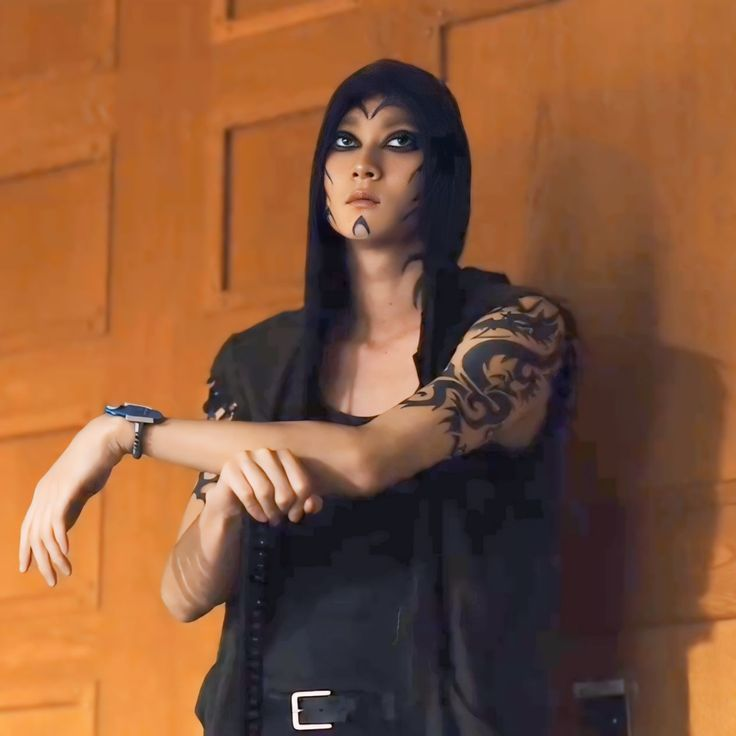